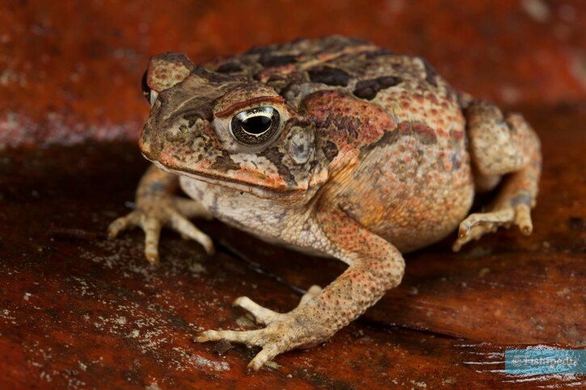

El sapo de caña es un anfibio grande originario de América. Es conocido por su piel rugosa y por producir toxinas como defensa contra depredadores.

El sapo de caña fue introducido en varios países para controlar plagas, pero se convirtió en una especie invasora.